2026-07-29
CachyOS は Arch Linux をベースにしたディストリビューション。
Calamares で簡単にインストールできる。
日本語フォントが入っているので文字化けしない。
オンラインインストールを行うので、最新の環境をすぐに使える。
CPUに応じて最適化されたパッケージを使用するので、性能が向上する。
こちら。
こちらから Ventoy をダウンロード。
USBメモリを差し込んでデバイスのパスを確認。
lsblk -p | grep disk
# /dev/sda 8:0 1 28.7G 0 disk
# /dev/zram0 253:0 0 4G 0 disk [SWAP]
# /dev/nvme0n1 259:0 0 1.8T 0 disk ディスクのサイズから /dev/sda がUSBデバイスのパスだと判断。
Ventoy を /dev/sda にインストール。
Wayland ではGUI版を起動できないのでCUI版を使用する。
以下のコマンドでは無確認でフォーマットすることがないよう、パスを
/dev/sdX にしている。
新規の場合（USBメモリがフォーマットされる）:
sudo sh Ventoy2Disk.sh -i /dev/sdXアップデートの場合:
sudo sh Ventoy2Disk.sh -u /dev/sdXCachyOS のISOファイルをUSBメモリにコピーする。
Kubuntu
などの利用者が多いOSのISOファイルもコピーする。インストールが失敗したとき、別のOSがないと何もできなくなる。
USBメモリを挿してPCの電源を入れ、ブートメニューキーを押す。
ブートメニューキーは次のとおり。
| メーカー | ブートメニューキー |
|---|---|
| ASUS | F8 |
| ASRock | F11 |
| GIGABYTE | F12 |
| MSI | F11 |
ブートメニューキーを押すとブートデバイスの選択画面が出る。
あらかじめUEFIで「CSM
Support」を無効にしておくと、UEFIブートに対応していないデバイスが非表示になるので、選択が楽になる。
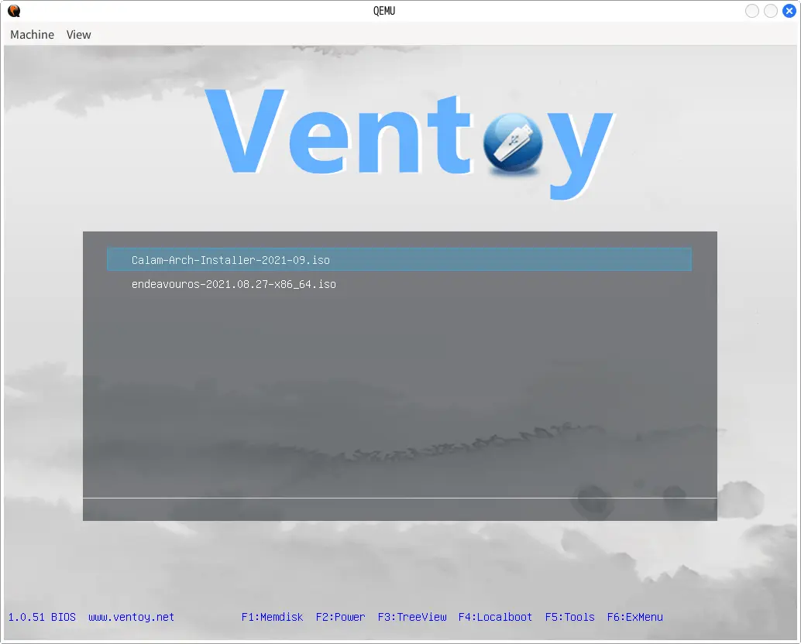
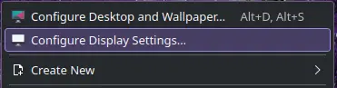
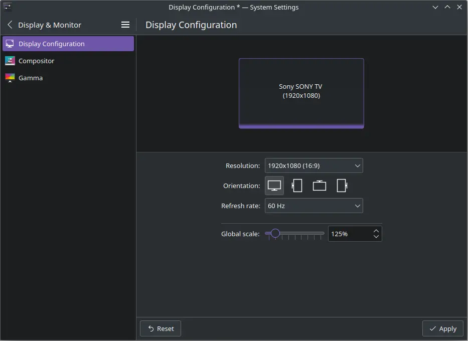
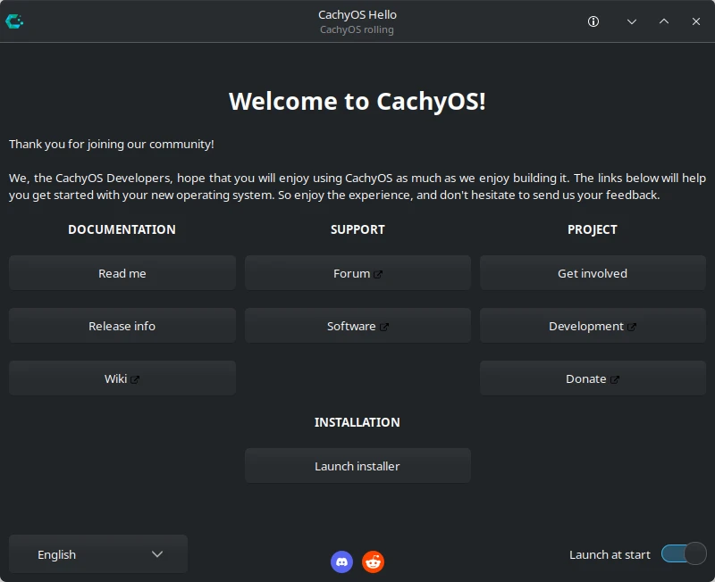
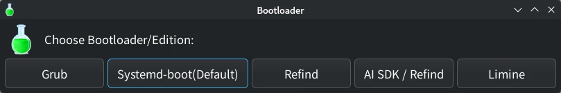
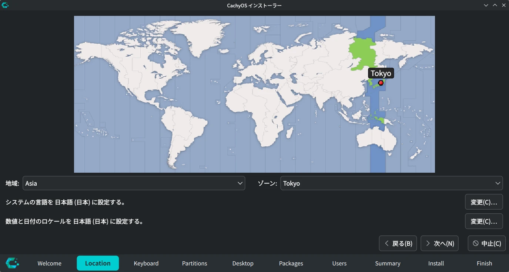
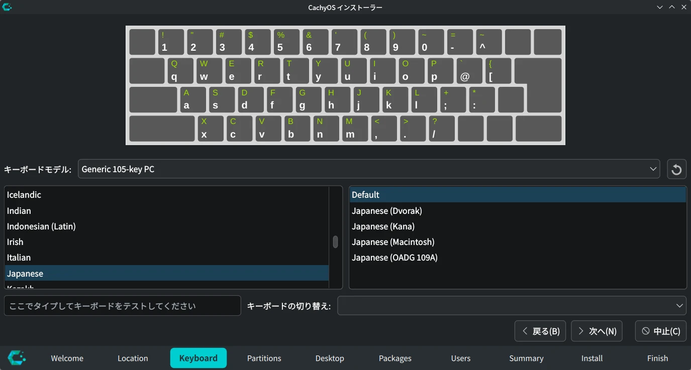
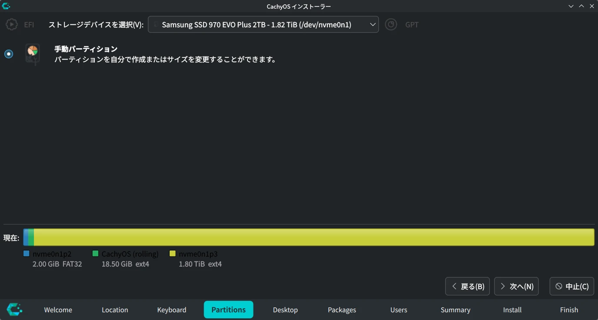
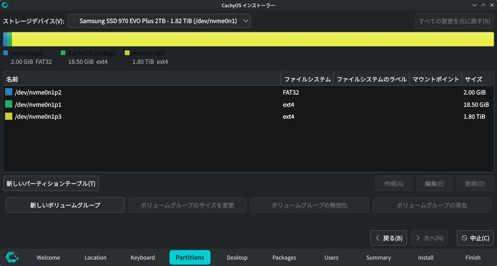
| パーティション | サイズ | フォーマット | ファイルシステム | フラグ |
|---|---|---|---|---|
| /boot | 4096 MiB | する | fat32 | boot |
| / | 30720 MiB | する | ext4 | なし |
| /home | 残り全部 | しない | ext4 | なし |
「/home」は初めて作成する場合のみフォーマット。
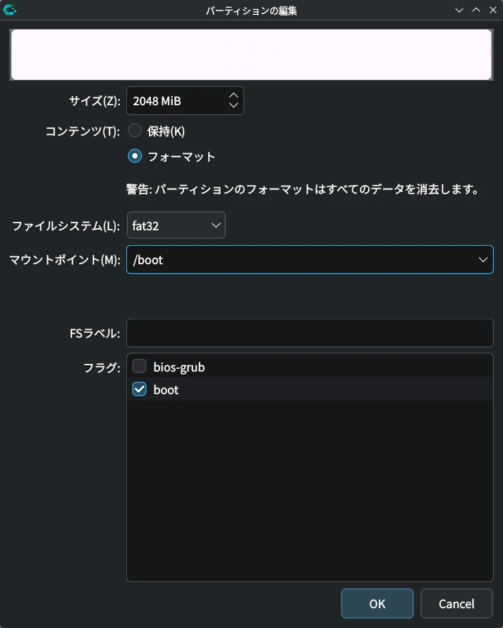
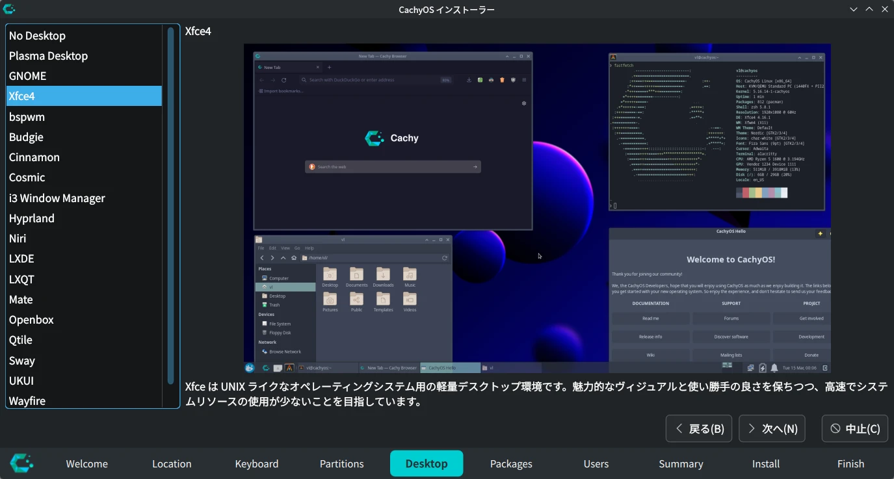
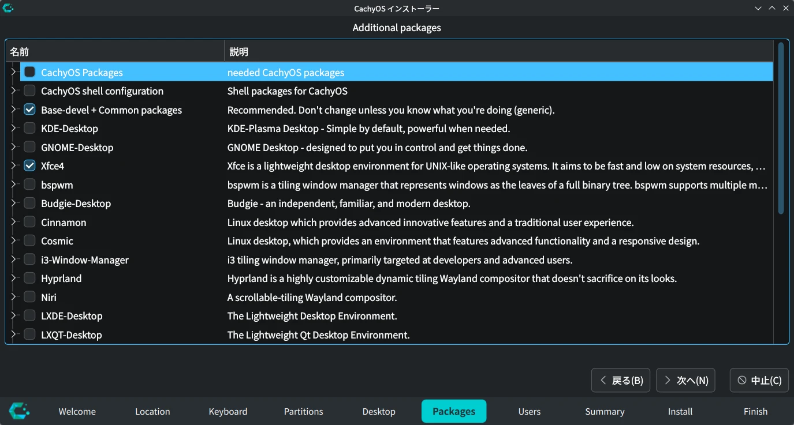
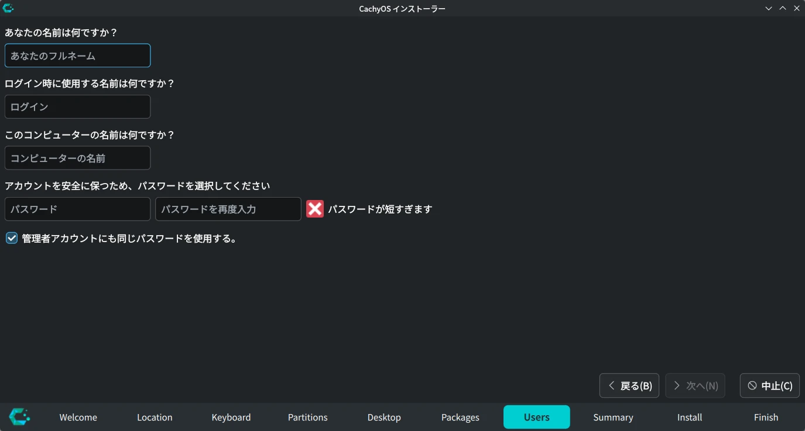
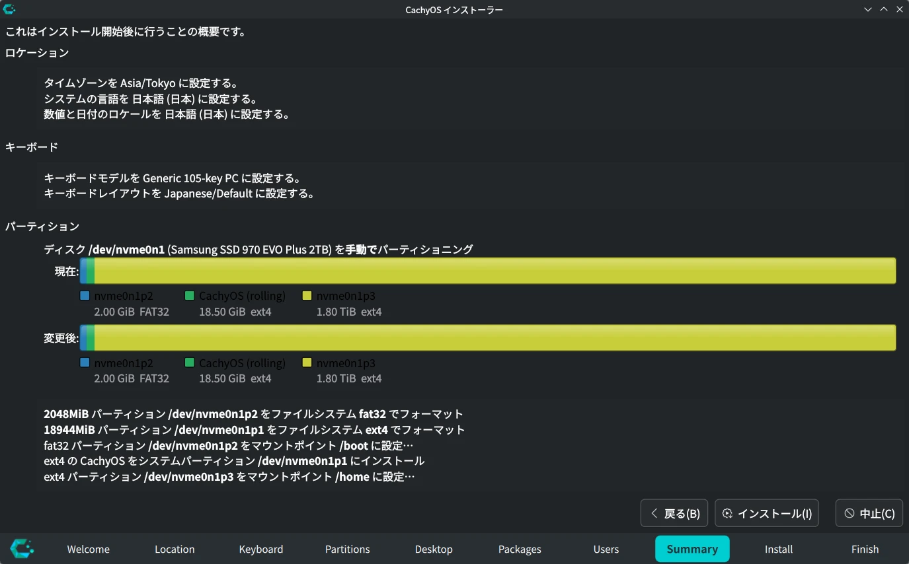
インストールが終わったら再起動して設定を行う。